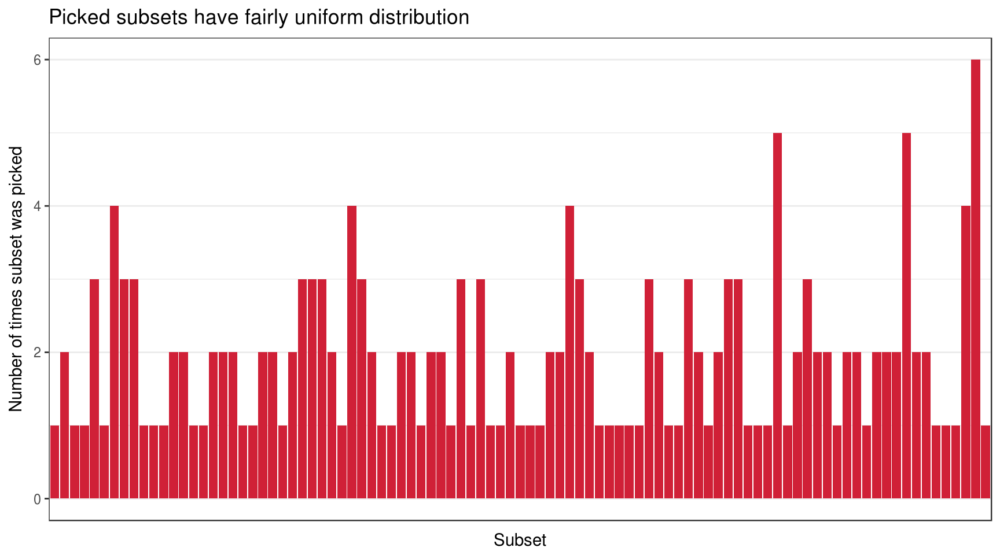
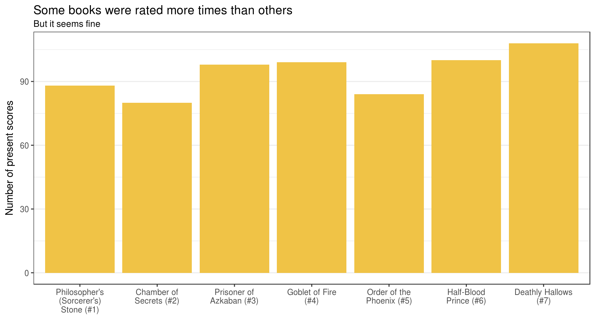
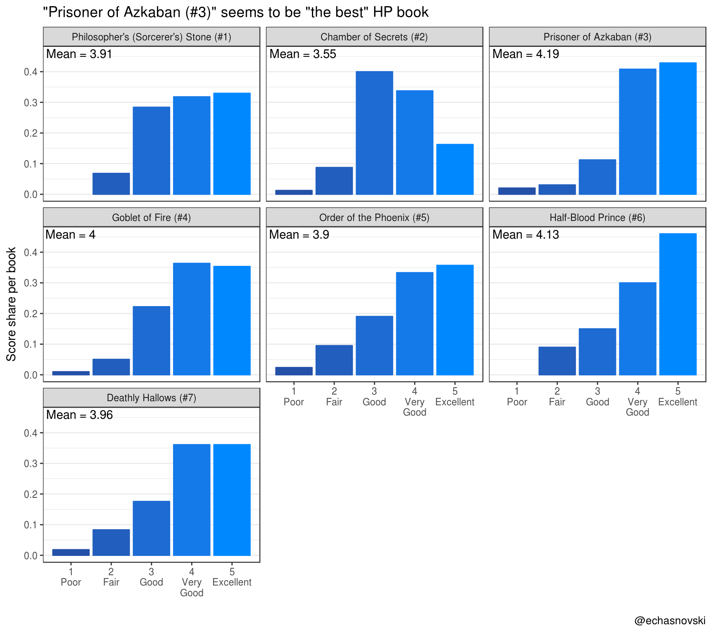
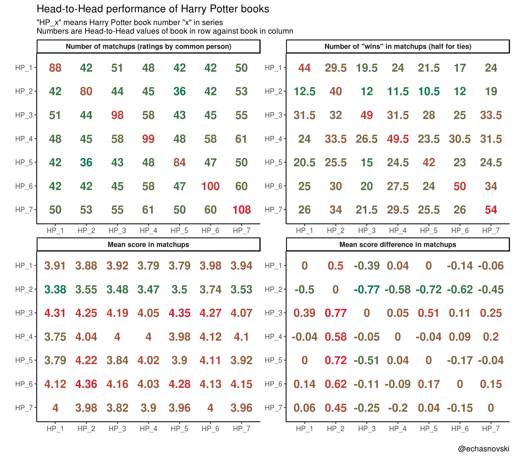

Harry Potter and competition results with comperes
Prologue
About a month ago I decided to add interesting data set to my almost finished (hopefully, soon to be on CRAN) comperes package. Data should represent results of some not ordinary competition. After some thought I picked a “competition” between Harry Potter books with a goal eventually to rate them from worst to best. After a series of events I ended up creating data myself. You can read more about that in my previous post.
Post and survey in general were popularized mostly among R users with R-bloggers (which gave me ~53 respondents), Twitter (which added the rest) and Reddit (which added ~0 people as post was deleted soon after publication). Survey managed to attract 182 respondents. I want to greatly thank all people who took their time to take part in and spread a word about my survey. Special thanks goes to Mara Averick who started a Twitter wave.
This post has two goals:
- Present and explore results of the survey.
- Demonstrate basic functionality of
comperespackage. To learn more go to its README and vignettes.
Overview
Survey results can be obtained by installing development version of comperes package from GitHub. They are present as package data named hp_survey.
This post will cover the following topics:
- Exploration of survey results (most important being Book scores section).
- Description of
comperescompetition results formats with conversionhp_surveyto one of them. - Head-to-Head “performance” of books against each other.
We will need the following setup:
library(dplyr)
library(tidyr)
library(rlang)
library(stringr)
library(ggplot2)
library(comperes)
set.seed(201805)
theme_set(theme_bw())
# Authenticity palette
hp_pal <- c(Gryff = "#D02037", Huffl = "#F0C346",
Raven = "#2450A8", Raven_light = "#0088FF",
Slyth = "#09774A")
# For less noisy bar charts
theme_bar <- function() {
list(theme(panel.grid.major.x = element_blank(),
panel.grid.minor.x = element_blank()))
}Exploration
Data preparation
hp_suvery is a tibble (enhanced data frame) and has the following columns:
- person <int> : Identifier of a person.
- book <chr> : Identifier of a Harry Potter book. Its values are of the form “HP_x” where “x” represents book’s number in the series (from 1 to 7).
- score <chr> : Book’s score. Can be one of “1 - Poor”, “2 - Fair”, “3 - Good”, “4 - Very Good”, “5 - Excellent”.
For exploration, let’s transform hp_survey for more expressive code and results:
- Convert scores to numerical.
- Add book names.
book_names <- c(
"Philosopher's (Sorcerer's) Stone (#1)",
"Chamber of Secrets (#2)",
"Prisoner of Azkaban (#3)",
"Goblet of Fire (#4)",
"Order of the Phoenix (#5)",
"Half-Blood Prince (#6)",
"Deathly Hallows (#7)"
)
book_name_tbl <- tibble(
book = paste0("HP_", 1:7),
book_name = factor(book_names, levels = book_names)
)
hp <- hp_survey %>%
# Extract numerical score
rename(score_chr = score) %>%
mutate(score = as.integer(gsub("[^0-9].*$", "", score_chr))) %>%
# Add book names
left_join(y = book_name_tbl, by = "book")
hp
## # A tibble: 657 x 5
## person book score_chr score book_name
## <int> <chr> <chr> <int> <fct>
## 1 1 HP_6 5 - Excellent 5 Half-Blood Prince (#6)
## 2 1 HP_7 5 - Excellent 5 Deathly Hallows (#7)
## 3 2 HP_1 3 - Good 3 Philosopher's (Sorcerer's) Stone (#1)
## 4 2 HP_4 5 - Excellent 5 Goblet of Fire (#4)
## 5 2 HP_5 2 - Fair 2 Order of the Phoenix (#5)
## # ... with 652 more rowsSubset uniformity
The first step in the survey was to choose the first element in the randomly shuffled list to simulate generation of random subset from all books. Each of 127 list element was connected to one subset. Lets visualize subset frequency to ensure a good faith of respondents:
# Compute subset representations
hp_subsets <- hp %>%
arrange(person, book) %>%
group_by(person) %>%
summarise(subset = paste0(book, collapse = "-"))
# Compute the number of actually picked subsets
n_distinct(hp_subsets$subset)
## [1] 95
# Visualize
hp_subsets %>%
ggplot(aes(subset)) +
geom_bar(fill = hp_pal["Gryff"]) +
labs(
x = "Subset", y = "Number of times subset was picked",
title = "Picked subsets have fairly uniform distribution"
) +
scale_x_discrete(labels = NULL) +
theme_bar() +
theme(axis.ticks.x = element_blank())
So there are 95 subsets actually picked and their distribution seems reasonably uniform. This is enough for me to confirm that randomization for subsets was successful.
Book presence
Other important thing to explore is number of times book was actually rated:
hp %>%
ggplot(aes(book_name)) +
geom_bar(fill = hp_pal["Huffl"]) +
# Cool way to wrap labels for a given width
scale_x_discrete(labels = function(x) str_wrap(x, width = 15)) +
labs(
x = "", y = "Number of present scores",
title = "Some books were rated more times than others",
subtitle = "But it seems fine"
) +
theme_bar()
Book scores
The most obvious way to summarise book “performance” is its mean score of numerical representation of scale. Using mean is not harmful in this study as no outlier can be present.
hp_book_score <- hp %>%
group_by(book_name) %>%
summarise(mean_score = round(mean(score), digits = 2)) %>%
arrange(desc(mean_score))
hp_book_score
## # A tibble: 7 x 2
## book_name mean_score
## <fct> <dbl>
## 1 Prisoner of Azkaban (#3) 4.19
## 2 Half-Blood Prince (#6) 4.13
## 3 Goblet of Fire (#4) 4.00
## 4 Deathly Hallows (#7) 3.96
## 5 Philosopher's (Sorcerer's) Stone (#1) 3.91
## 6 Order of the Phoenix (#5) 3.90
## 7 Chamber of Secrets (#2) 3.55So, “the best” book seems to be “Harry Potter and the Prisoner of Azkaban (#3)”.
For more understanding of results, lets also visualize score distribution.
hp %>%
# Compute share of score per book
count(book_name, score) %>%
group_by(book_name) %>%
mutate(share = n / sum(n)) %>%
ungroup() %>%
# Visualize
ggplot() +
geom_col(
aes(score, share, colour = score, fill = score),
show.legend = FALSE
) +
geom_text(
data = hp_book_score,
mapping = aes(label = paste0("Mean = ", mean_score)),
x = -Inf, y = Inf,
hjust = -0.05, vjust = 1.3
) +
facet_wrap(~ book_name) +
scale_x_continuous(
breaks = 1:5,
labels = c("1\nPoor", "2\nFair", "3\nGood",
"4\nVery\nGood", "5\nExcellent")
) +
scale_fill_gradient(low = hp_pal["Raven"], high = hp_pal["Raven_light"]) +
scale_colour_gradient(low = hp_pal["Raven"], high = hp_pal["Raven_light"]) +
labs(
x = "", y = "Score share per book",
title = '"Prisoner of Azkaban (#3)" seems to be "the best" HP book',
caption = "@echasnovski"
) +
theme_bar()
Competition results
Formats of comperes
Understanding of competition is quite general: it is a set of games (abstract event) in which players (abstract entity) gain some abstract scores (typically numeric). Inside games all players are treated equally. The most natural example is sport results, however not the only one. For example, product rating can be considered as a competition between products as “players”. Here a “game” is a customer that reviews a set of products by rating them with numerical “score” (stars, points, etc.).
In case of Harry Potter Books Survey results “game” is an act of respondent taking part in survey, “player” - Harry Potter book, “score” - discrete scale values converted to numerical score from 1 to 5.
In comperes there are two supported formats of competition results:
- Long format. It is the most abstract way of presenting competition results. Basically, it is a data frame (or tibble) with columns
game(game identifier),player(player identifier) andscorewhere each row represents the score of particular player in particular game. One game can consist from variable number of players which makes this format more usable. Extra columns are allowed. - Wide format is a more convenient way to store results with fixed number of players in a game. Each row represents scores of all players in particular game. Data should be organized in pairs of columns “player”-“score”. Identifier of a pair should go after respective keyword and consist only from digits. For example:
player1,score1,player2,score2. Order doesn’t matter. Columngameis optional. Extra columns are also allowed.
Programmatically these formats are implemented as S3 classes longcr and widecr respectively. Essentially, they are tibbles with fixed structure. Objects of these classes should be created using functions as_longcr() and as_widecr() which also do conversions to other format.
Conversion
hp_survey presents results in long format.
hp_cr <- hp_survey %>%
transmute(
game = person, player = book,
score = as.integer(gsub("[^0-9].*$", "", score))
) %>%
as_longcr()
hp_cr
## # A longcr object:
## # A tibble: 657 x 3
## game player score
## <int> <chr> <int>
## 1 1 HP_6 5
## 2 1 HP_7 5
## 3 2 HP_1 3
## 4 2 HP_4 5
## 5 2 HP_5 2
## # ... with 652 more rowsHere is the demonstration of conversion to wide format. It detects the maximum number of players in a game, which is 7, and assumes that data is missing in games with less number of players.
as_widecr(hp_cr)
## # A widecr object:
## # A tibble: 182 x 15
## game player1 score1 player2 score2 player3 score3 player4 score4
## <int> <chr> <int> <chr> <int> <chr> <int> <chr> <int>
## 1 1 HP_6 5 HP_7 5 <NA> NA <NA> NA
## 2 2 HP_1 3 HP_4 5 HP_5 2 HP_6 4
## 3 3 HP_1 3 HP_3 4 HP_5 1 <NA> NA
## 4 4 HP_6 5 HP_7 5 <NA> NA <NA> NA
## 5 5 HP_4 4 HP_5 3 <NA> NA <NA> NA
## # ... with 177 more rows, and 6 more variables: player5 <chr>,
## # score5 <int>, player6 <chr>, score6 <int>, player7 <chr>, score7 <int>Head-to-Head
Functionality of comperes
Head-to-Head value is a summary statistic of direct confrontation between two players. It is assumed that this value can be computed based only on the players’ matchups (results for ordered pairs of players from one game). In other words, every game is converted into series of “subgames” between ordered pairs of players (including selfplay) which is stored as widecr object. After that, summary of item, defined by columns player1 and player2, is computed.
comperes has function get_matchups() for computing matchups:
get_matchups(hp_cr)
## # A widecr object:
## # A tibble: 2,697 x 5
## game player1 score1 player2 score2
## <int> <chr> <int> <chr> <int>
## 1 1 HP_6 5 HP_6 5
## 2 1 HP_6 5 HP_7 5
## 3 1 HP_7 5 HP_6 5
## 4 1 HP_7 5 HP_7 5
## 5 2 HP_1 3 HP_1 3
## # ... with 2,692 more rowsTo compute multiple Head-to-Head values, use h2h_long() supplying competition results and summarizing expressions in dplyr::summarise() fashion. They will be applied to a data frame of matchups.
hp_cr_h2h <- hp_cr %>% h2h_long(
# Number of macthups
n = n(),
# Number of wins plus half the number of ties
# num_wins() is a function from comperes to compute number of times
# first score is bigger than second one
num_wins = num_wins(score1, score2, half_for_draw = TRUE),
# Mean rating of a book scored in matchups with other books
mean_score = mean(score1),
# Mean rating difference of books scored in direct matchups
mean_score_diff = mean(score1 - score2)
) %>%
mutate_if(is.numeric, funs(round(., 2)))
hp_cr_h2h
## # A long format of Head-to-Head values:
## # A tibble: 49 x 6
## player1 player2 n num_wins mean_score mean_score_diff
## <chr> <chr> <dbl> <dbl> <dbl> <dbl>
## 1 HP_1 HP_1 88. 44.0 3.91 0.
## 2 HP_1 HP_2 42. 29.5 3.88 0.500
## 3 HP_1 HP_3 51. 19.5 3.92 -0.390
## 4 HP_1 HP_4 48. 24.0 3.79 0.0400
## 5 HP_1 HP_5 42. 21.5 3.79 0.
## # ... with 44 more rowsSo here we see, for example, that HP_1 and HP_2 had 42 matchups, i.e. they were rated by the same person 42 times. HP_1 “won” 29.5 (respecting ties) times, gained mean score of 3.88 in those matchups and had, on average, 0.5 points more.
There is also an h2h_mat() function which computes a matrix of Head-to-Head values for one expression.
hp_cr %>% h2h_mat(num_wins(score1, score2, half_for_draw = TRUE))
## # A matrix format of Head-to-Head values:
## HP_1 HP_2 HP_3 HP_4 HP_5 HP_6 HP_7
## HP_1 44.0 29.5 19.5 24.0 21.5 17.0 24.0
## HP_2 12.5 40.0 12.0 11.5 10.5 12.0 19.0
## HP_3 31.5 32.0 49.0 31.5 28.0 25.0 33.5
## HP_4 24.0 33.5 26.5 49.5 23.5 30.5 31.5
## HP_5 20.5 25.5 15.0 24.5 42.0 23.0 24.5
## HP_6 25.0 30.0 20.0 27.5 24.0 50.0 34.0
## HP_7 26.0 34.0 21.5 29.5 25.5 26.0 54.0For more convenient usage, comperes has a list h2h_funs of some common Head-to-Head functions stored as expressions. To use them you need a little bit of rlang’s unquoting magic.
h2h_funs[1:3]
## $mean_score_diff
## mean(score1 - score2)
##
## $mean_score_diff_pos
## max(mean(score1 - score2), 0)
##
## $mean_score
## mean(score1)
hp_cr %>% h2h_long(!!! h2h_funs)
## # A long format of Head-to-Head values:
## # A tibble: 49 x 11
## player1 player2 mean_score_diff mean_score_diff_pos mean_score
## <chr> <chr> <dbl> <dbl> <dbl>
## 1 HP_1 HP_1 0. 0. 3.91
## 2 HP_1 HP_2 0.500 0.500 3.88
## 3 HP_1 HP_3 -0.392 0. 3.92
## 4 HP_1 HP_4 0.0417 0.0417 3.79
## 5 HP_1 HP_5 0. 0. 3.79
## # ... with 44 more rows, and 6 more variables: sum_score_diff <int>,
## # sum_score_diff_pos <dbl>, sum_score <int>, num_wins <dbl>,
## # num_wins2 <dbl>, num <int>Harry Potter books
Head-to-Head “performance” of Harry Potter books is summarised in the following plot:
hp_cr_h2h %>%
gather(h2h_fun, value, -player1, -player2) %>%
# Manually produce a dummy colour variable to use in facets
group_by(h2h_fun) %>%
mutate(col = (value - min(value)) / (max(value) - min(value))) %>%
ungroup() %>%
# Make factors for correct orders
mutate(
player1 = factor(player1, levels = rev(sort(unique(player1)))),
player2 = factor(player2, levels = sort(unique(player2))),
h2h_fun = factor(h2h_fun,
levels = c("n", "num_wins",
"mean_score", "mean_score_diff")),
h2h_fun = recode(
h2h_fun,
n = "Number of matchups (ratings by common person)",
num_wins = 'Number of "wins" in matchups (half for ties)',
mean_score = "Mean score in matchups",
mean_score_diff = "Mean score difference in matchups"
)
) %>%
# Visualize
ggplot(aes(player1, player2)) +
geom_text(
aes(label = value, colour = col),
size = 5, fontface = "bold", show.legend = FALSE
) +
facet_wrap(~ h2h_fun, scales = "free") +
# To coordinate well with matrix form of Head-to-Head results
coord_flip() +
scale_colour_gradient(low = hp_pal["Slyth"], high = hp_pal["Gryff"]) +
labs(
x = "", y = "",
title = "Head-to-Head performance of Harry Potter books",
subtitle = paste0(
'"HP_x" means Harry Potter book number "x" in series\n',
"Numbers are Head-to-Head values of book in row against book in column"
),
caption = "@echasnovski"
) +
theme_classic() +
theme(strip.text = element_text(face = "bold"))
There is a lot of information hidden in this plot. The most obvious discoveries:
- It happened that book “HP_7” (“Deathly Hallows”) was rated with “HP_4” (“Goblet of Fire”) by one person the most: 61 times.
- “HP_7” scored over “HP_2” (“Chamber of Secrets”) the most wins (34, half for ties) as did “HP_6” (“Half-Blood Prince”) over “HP_7”.
- Book “HP_6” made the highest mean score of 4.36 in matchups with “HP_2”, which is bigger by 0.23 from its overall mean score.
- In terms of score differences, “HP_3” (“Prisoner of Azkaban”) did best in matchups with “HP_2”, scoring on average 0.77 points more. This pair also represents “the best” and “the worst” books in terms of mean score.
Conclusion
- A public call for help in creating data set for R package shouldn’t be made on Reddit but rather on R-bloggers or Twitter.
- Among all original Harry Potter books, “Harry Potter and the Prisoner of Azkaban” seems to be considered “best” among R users. “Harry Potter and the Chamber of Secrets” suffers the opposite fate.
- Package
comperesis useful for storing, manipulating and summarising abstract competition results. - However informative, manually inspecting competition results with direct summaries and Head-to-Head tables is hard. They can display complex nature of performance relations between players. Next analysis of Harry Potter Books Survey data will be using my package comperank which implements different ranking methods for automatic discovery of player’s performance.
## R version 3.4.4 (2018-03-15)
## Platform: x86_64-pc-linux-gnu (64-bit)
## Running under: Ubuntu 16.04.4 LTS
##
## Matrix products: default
## BLAS: /usr/lib/openblas-base/libblas.so.3
## LAPACK: /usr/lib/libopenblasp-r0.2.18.so
##
## locale:
## [1] LC_CTYPE=ru_UA.UTF-8 LC_NUMERIC=C
## [3] LC_TIME=ru_UA.UTF-8 LC_COLLATE=ru_UA.UTF-8
## [5] LC_MONETARY=ru_UA.UTF-8 LC_MESSAGES=ru_UA.UTF-8
## [7] LC_PAPER=ru_UA.UTF-8 LC_NAME=C
## [9] LC_ADDRESS=C LC_TELEPHONE=C
## [11] LC_MEASUREMENT=ru_UA.UTF-8 LC_IDENTIFICATION=C
##
## attached base packages:
## [1] methods stats graphics grDevices utils datasets base
##
## other attached packages:
## [1] bindrcpp_0.2.2 comperes_0.2.0 ggplot2_2.2.1 stringr_1.3.0
## [5] rlang_0.2.0 tidyr_0.8.0.9000 dplyr_0.7.5.9000
##
## loaded via a namespace (and not attached):
## [1] Rcpp_0.12.16 pillar_1.2.1 compiler_3.4.4 plyr_1.8.4
## [5] bindr_0.1.1 tools_3.4.4 digest_0.6.15 evaluate_0.10.1
## [9] tibble_1.4.2 gtable_0.2.0 pkgconfig_2.0.1 cli_1.0.0
## [13] yaml_2.1.17 blogdown_0.5 xfun_0.1 knitr_1.20
## [17] rprojroot_1.3-2 grid_3.4.4 tidyselect_0.2.4 glue_1.2.0
## [21] R6_2.2.2 rmarkdown_1.9 bookdown_0.7 purrr_0.2.4
## [25] magrittr_1.5 backports_1.1.2 scales_0.5.0 htmltools_0.3.6
## [29] assertthat_0.2.0 colorspace_1.3-2 labeling_0.3 utf8_1.1.3
## [33] stringi_1.1.6 lazyeval_0.2.1 munsell_0.4.3 crayon_1.3.4